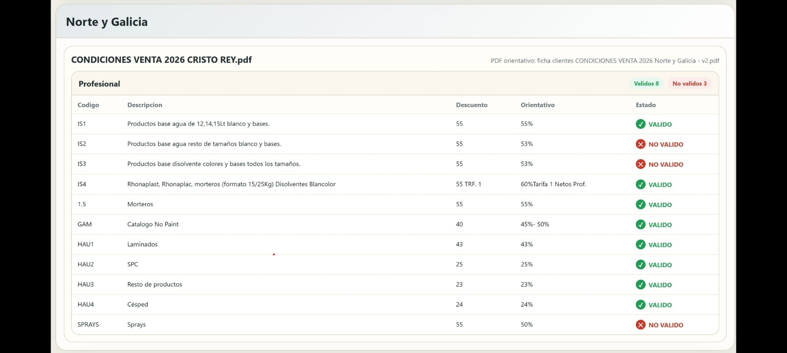

Customer-opening discount control application
Context
The company operates with a broad commercial structure, multiple channels, high territorial capillarity and different customer types. In that setting, reinforcing control and consistency in the discount policy applied when opening new customers becomes both an operational and an economic need.
Objective
The application aims to ensure commercial discipline, protect company margin, standardise criteria across zones, automate control processes and provide traceable visibility over the discounts applied in new openings.
How it works
- It starts from a base document with the maximum recommended discounts by customer type.
- Sales staff fill in customer-opening forms applying discounts according to commercial judgement.
- The completed PDFs are deposited in a defined folder.
- The application reads the PDFs, extracts the applied discounts and compares them with the recommended maximums.
- The result is shown in a visual dashboard with a simple compliance/deviation validation.
Expected benefits
- Immediate identification of deviations.
- Fewer discounts outside policy and better pricing consistency.
- More homogeneous commercial criteria across zones.
- Manual review replaced by automatic validation and time savings.
- Greater transparency, traceability and a base for later analytics.
Restrictions and risks
The system depends on PDF-format consistency and focuses on comparing the applied discount against the recommended maximum. It does not yet incorporate the customer’s strategic context, exception approvals or direct analysis of real profitability by transaction.
System example
